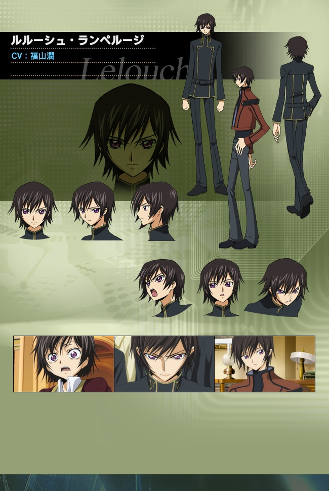
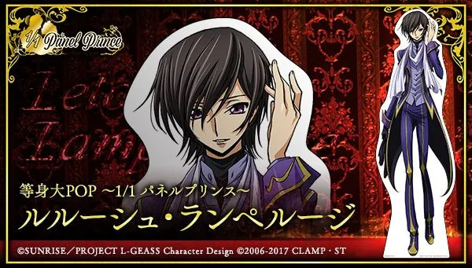

Lelouch Lamperouge
Lelouch Lamperouge is de hoofdpersonage van de anime
Code Geass: Lelouch of the Rebellion.
Hij is een briljante strateeg die de kracht van Geass krijgt
en een revolutie begint tegen het Britannische Rijk.
Algemene informatie
- Volledige naam: Lelouch vi Britannia
- Gebruikte naam: Lelouch Lamperouge
- Alias: Zero
- Familie: Nunnally vi Britannia
- Afkomst: Heilig Britannisch Rijk
Achtergrond
Lelouch is een verbannen prins van het Britannische Rijk.
Na de dood van zijn moeder worden hij en zijn zus Nunnally
naar Japan gestuurd.
Daar groeit hij op onder de naam Lamperouge.
Later ontmoet hij C.C., die hem de mysterieuze kracht Geass geeft.

Uiterlijk
Lelouch heeft zwart haar en paarse ogen.
Hij is lang en slank en draagt vaak zijn schooluniform.
Wanneer hij als Zero optreedt, draagt hij een zwart kostuum
met een masker en een cape.
Dit masker verbergt zijn echte identiteit.

Persoonlijkheid
Lelouch is zeer intelligent en strategisch.
Hij denkt altijd meerdere stappen vooruit.
Hoewel hij soms hard en manipulatief kan zijn,
doet hij alles voor zijn zus Nunnally.
Hij wil een betere wereld creëren waarin zij veilig kan leven.

Rol in het verhaal
Als Zero leidt Lelouch de verzetsgroep de Black Knights.
Hij gebruikt zijn Geass-kracht om mensen bevelen te geven
die ze niet kunnen weigeren.
Met slimme strategieën probeert hij het Britannische Rijk
ten val te brengen.
Belang
Lelouch is het centrale personage van Code Geass.
Zijn keuzes en plannen bepalen het verloop van het verhaal.
Hij laat zien hoe ver iemand kan gaan om een betere wereld te creëren.